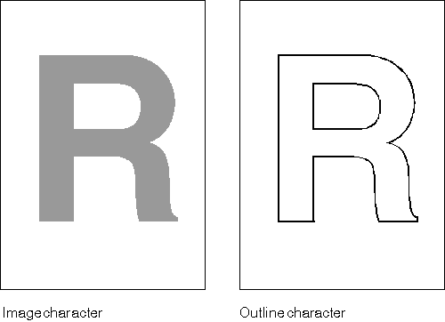

The operating system can define and implement the characters of a font as either images or outlines.
Each of the characters in an image font (sometimes called a raster font) is created by alternating the ON and OFF settings of pels to produce the image. The image characters are stored as a bit map. Sometimes image fonts are even referred to as bit-map fonts.
The characters in an image font must be drawn in a fixed size-you cannot rotate or scale them, for example-but usually they are of good quality. They are displayed faster than outline characters, and frequently they look better at low resolutions.
The characters in an outline font, on the other hand, are drawn using a sequence of lines and arcs. Then the characters are filled if so requested. The outline characters are stored as a collection of line, fillet, and spline functions. Outline fonts are transformable because the outline characters can be scaled, rotated, and sheared. Outline fonts can be implemented as vectors, drawn by a series of small, straight lines. If that is the case, they can be referred to correctly as vector fonts. Vector fonts can be drawn much faster than fonts requiring the inclusion of actual curves and arcs.
A major advantage of outline fonts is their device independence. Unlike image fonts, whose appearance depends on the device's pel definition.
The following figure is an example of a character in both an image font and an outline font.
Image and Outline Characters
The image character is produced by manipulating pels. The outline character is produced by drawing a sequence of lines and arcs. (The resultant shape of an outline character can be filled if desired.)
Most of the functions and data structures described in this chapter relate only to outline fonts.